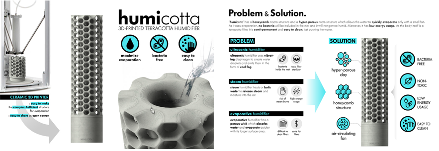

KAIST Top 10
KAIST Top 10
KAIST RESEARCH ACHIEVEMENTS
HUMICOTTA : 3D Printed Terracotta Humidifier
Department of Industrial Design Sangmin Bae
Summary
HUMICOTTA is a 3D printed ceramic humidifier which is designed for the 6th product of . It is comprised of a base module with a built-in fan and a filter module that maximizes the humidification. The porous filter effectively absorbs the water in the cylinder space inside the filter into the outer surface, and then the wind blowing from the bottom fan evaporates it. This filter is optimized for humidification with micro porous structure of its material and the maximized surface structure of its shape. Diatomite, which is the main ingredient of the filter, is a tiny porous organic material that has excellent moisture absorption ability. Also, the shape is generated from algorism based 3D CAD program calculation to achieve maximum surface area while maintaining the stability as a ceramic piece. Ceramic 3D printers are used to fabricate porous honeycomb structures that cannot be manufactured by conventional ceramic molding methods. By utilizing the advantages of the 3D printer, it provides an open platform service that the user can design and produce, so that the user can create a humidifier suitable for his/her space through the 3D printer anytime and anywhere. HUMICOTTA is expected to be used as a sustainable humidifier which is semi-permanently with high energy efficiency while solving major problems of existing products; humidifier disinfectant or bacteria, high power requirement, and filter replacement cost of conventional humidifiers.
Background
KAIST ID+IM lab leads which is aims to create a system of humanitarian social circulation that works for charity by designing new products. Since 2005, collaborating with World Vision, ID+IM lab donate their own abilities and give away all of their profits for the education of children from low-income backgrounds. With innovative products including Crosscube, Lovepot, Heartea and D’light,
raised 1.7 billion won assets and created scholarships for 167 teenagers til now. AND HUMICOTTA was designed for the 6th product of . It is very important for people’s health to use a humidifier to maintain the proper humidity in the air. However, there are lots of problems in existing humidifier. Ultrasonic humidifier is likely to grow bacteria in its water container. Further, a detergent for removing the bacteria is also humidified and exposed to the air. Steam humidifier has a risk of steam burns, and it also needs high energy consumption. Existing evaporative humidifiers has complex filters which have to be disassembled and then cleaned with a tool. And also it has to be replaced periodically. So we tried to design a new type of humidifier which is easy to maintain, bacteria-free, and need low energy cost.

Contents
HUMICOTTA is comprised of a base module with a built-in fan and a filter module that maximizes the humidification. The porous filter effectively absorbs the water in the cylinder space inside the filter into the outer surface, and then the wind blowing from the bottom fan evaporates it. This filter is optimized for humidification with micro porous structure of its material and the maximized surface structure of its shape. Diatomite, which is the main ingredient of the filter, is a tiny porous organic material that has excellent moisture absorption ability. Also, the shape is generated from algorism based 3D CAD program calculation to achieve maximum surface area while maintaining the stability as a ceramic piece. Ceramic 3D printers are used to fabricate porous honeycomb structures that cannot be manufactured by conventional ceramic molding methods. By utilizing the advantages of the 3D printer, it provides an open platform service that the user can design and produce, so that the user can create a humidifier suitable for his/her space through the 3D printer anytime and anywhere. HUMICOTTA is expected to be used as a sustainable humidifier which is semi-permanently with high energy efficiency while solving major problems of existing products; humidifier disinfectant or bacteria, high power requirement, and filter replacement cost of conventional humidifiers.
Expected effect
- FOR USERS It is very important for people’s health to use a humidifier to maintain the proper humidity in the air. HUMICOTTA provides the appropriate amount of humidity into the air without worrying about bacteria. HUMICOTTA is also environmentally friendly. It does not need much electric energy to run. The entire filter part is made of diatomite, which can be used semi-permanently. Because the diatomite is one kind of soil, natural decomposition is possible. HUMICOTTA encourages users to participate in the production process. With its web/mobile-base open platform, its design value will be widely and continuously expanded to the various users through designing, sharing, and recreating by anybody. • FOR INDUSTRY Nowadays, 3D printer technology has become very popular and affordable. Thus, now only professional mass producers, but also start-ups and amateur makers can do manufacture HUMICOTTA with less initial equipment investment. It is easy to manage inventory by producing products after the user’s customization is confirmed through open platform. In addition, it is expected that there will not be much cost for after-sales service due to the simple product structure which it is not easy to break down. FOR SOCIETY HUMICOTTA was designed for the 6th product of aims to create a system of humanitarian and social circulation that works for charity by developing new products since 2005. With World Vision, an international relief and development organization, KAIST ID+IM Design Lab leads this project in which they donate and cooperate their own abilities and give away all of their profits for the education of children from low-income backgrounds. Through 1.7 billion won assets were raised to create scholarships for 167 teenagers. Furthermore, through the innovation as a product, HUMICOTTA makes a sustainable and eco-friendly life AND makes a foundation for children from low-income families to grow up to be the donor for other children. HUMICOTTA has won the U.S. IDEA Awards silver prize, and plays a major role in creating a pleasant environment and providing equal opportunities for many children in the future.
Research Outcomes
[PRIZE] International Design Awards, IDEA 2017 / SILVER AWARD
[EXHIBITION] The Industrial Designers Society of America , IDSA 2017 Conference / EXHIBITOR AND SPEAKER
[PRESS] International Authoritative design magazine , INNOVATION MAGAZINE / HOME & BATH
Social Effects
[FUND RAISE] 1.7 billion won worth of shared assets were raised to create scholarships for 167 teenagers